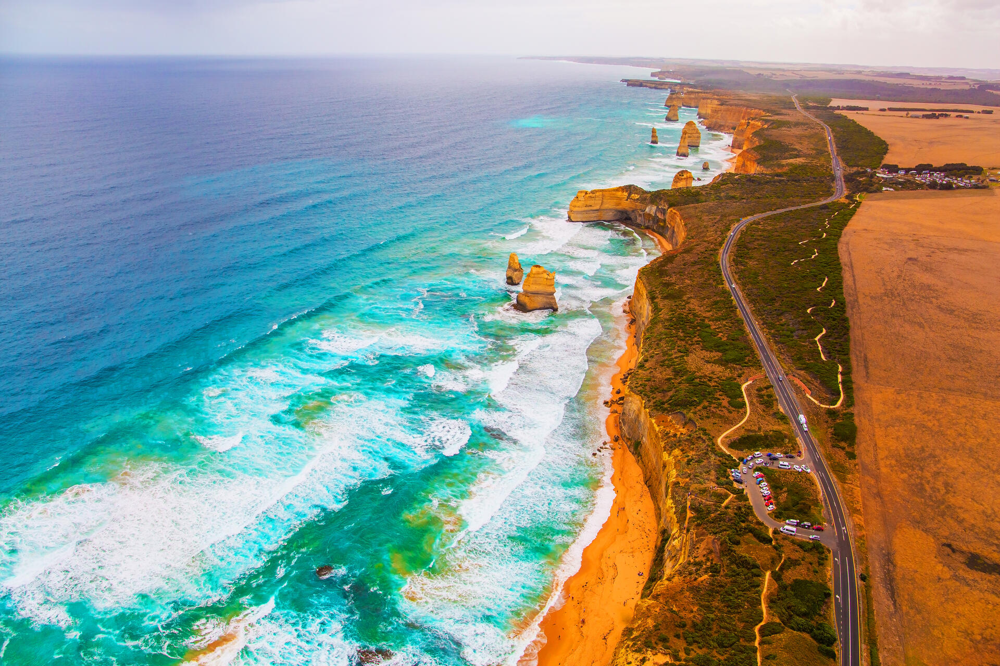
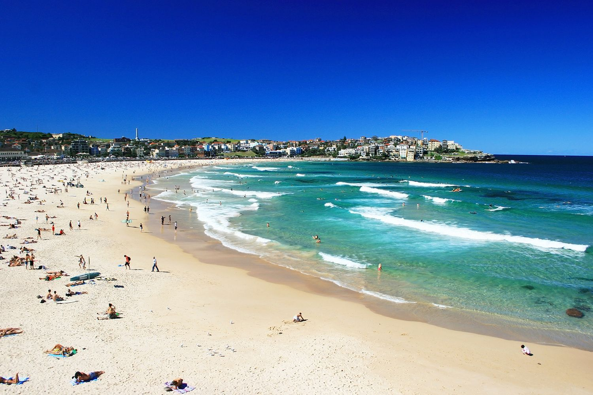

Lugares para Visitar
Great Barrier Reef

Situado ao largo da costa de Queensland, o Great Barrier Reef é um dos locais mais espetaculares do mundo para mergulho e snorkeling. Com mais de 2.900 recifes individuais e 900 ilhas, este ecossistema diversificado abriga milhares de espécies de peixes coloridos, corais exuberantes e outras formas de vida marinha. Os visitantes podem explorar a beleza submarina do recife por meio de passeios de barco, mergulho com cilindro ou simplesmente flutuando nas águas cristalinas.
Sydney Opera House

Uma obra-prima da arquitetura moderna, o Sydney Opera House é um ícone internacionalmente reconhecido e um dos locais mais emblemáticos da Austrália. Projetado pelo arquiteto dinamarquês Jørn Utzon, o edifício apresenta uma forma distintiva de "conchas" brancas que se elevam majestosamente acima do Porto de Sydney. Além de ser uma obra-prima visual, o Opera House é um centro cultural vibrante que oferece uma variedade de apresentações artísticas, desde ópera e balé até concertos de música clássica e moderna.
Great Ocean Road
Esta lendária estrada costeira, que se estende por 243 quilômetros ao longo da costa sudoeste de Victoria, oferece algumas das vistas mais espetaculares da Austrália. Os viajantes podem testemunhar a beleza dramática dos Doze Apóstolos, uma série de pilares de calcário que se erguem majestosamente do Oceano Antártico, além de outras formações rochosas impressionantes, como o Loch Ard Gorge e o London Arch. Com praias isoladas, florestas exuberantes e cidades costeiras encantadoras ao longo do caminho, a Great Ocean Road é uma jornada inesquecível pela natureza intocada da Austrália.
Uluru (Ayers Rock)

Localizado no Parque Nacional Uluru-Kata Tjuta, no Território do Norte, Uluru é uma das formações rochosas mais emblemáticas e sagradas da Austrália. Esta colossal monólito de arenito vermelho se destaca em meio ao deserto do Outback e é reverenciado como um local espiritual pelos povos aborígenes australianos. Ao visitar Uluru, os turistas podem testemunhar a magia do pôr do sol, quando a rocha se transforma em uma impressionante paleta de cores douradas e vermelhas.
Bondi Beach
Uma das praias mais famosas e movimentadas da Austrália, Bondi Beach é um paraíso para os amantes do sol, do mar e do surfe. Localizada a apenas 7 quilômetros do centro de Sydney, esta deslumbrante praia de areias douradas é conhecida por suas ondas perfeitas para o surfe, sua vibrante cena de praia e sua atmosfera descontraída. Os visitantes podem desfrutar de um dia ensolarado na areia, fazer uma caminhada panorâmica ao longo da trilha costeira de Bondi para Coogee, ou saborear uma refeição deliciosa em um dos muitos cafés à beira-mar. Bondi Beach encapsula o estilo de vida descontraído e ensolarado que define a cultura australiana.